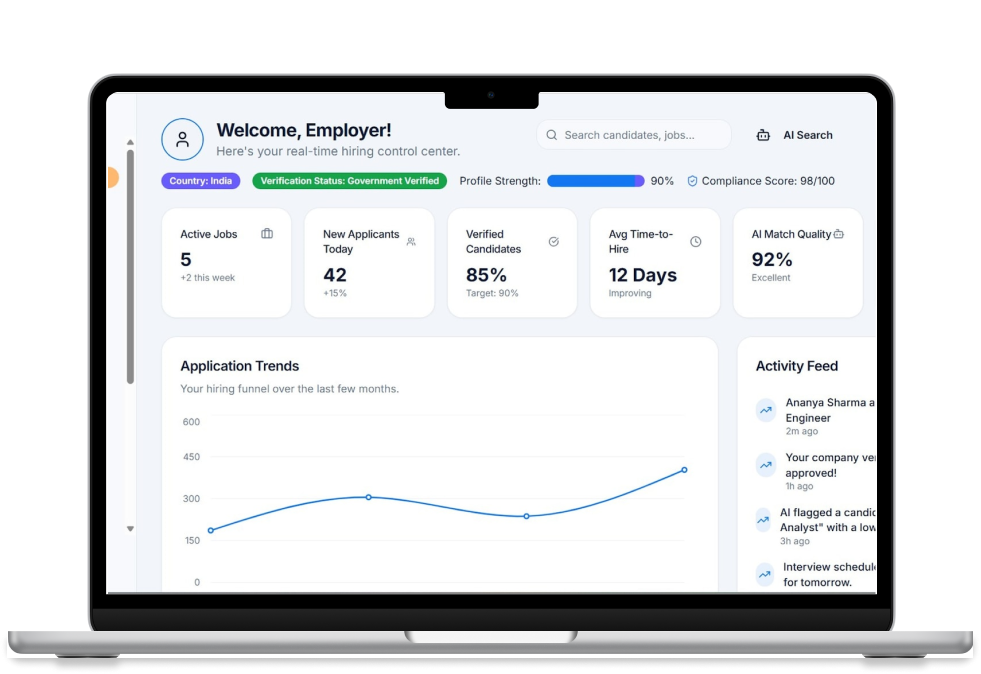
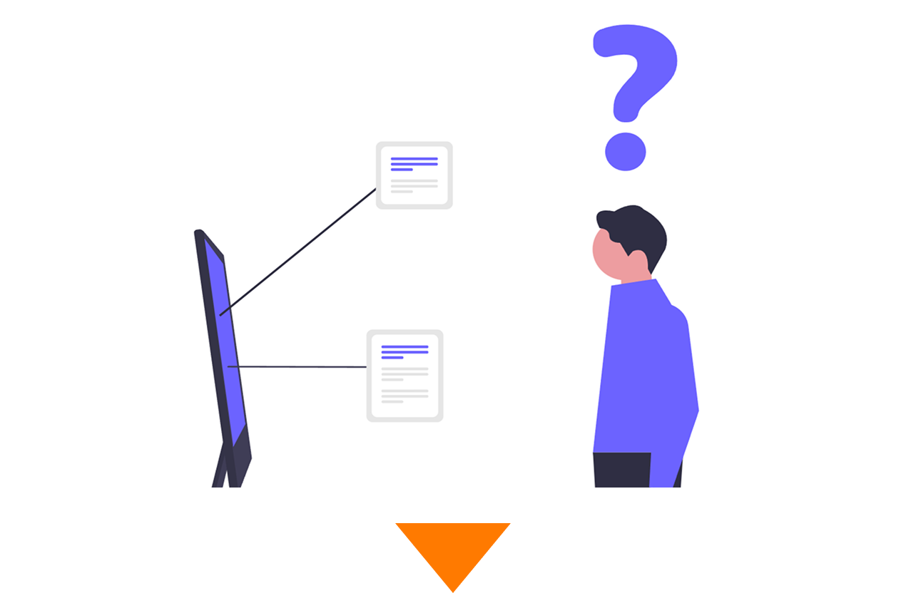

タスクフロー で
プロジェクト管理 を
会社の武器 に！
すべてのタスクを
一元管理し、
進行をスムーズに
進捗をリアルタイムで
可視化し、
管理をスムーズに
最短1分で
利用開始でき、
すぐに使える

こんな課題はありませんか？
複数案件の進捗が不透明化
複数案件が同時に進む中で、進捗が把握できず、管理が不透明になっていませんか？
担当者任せで属人化
担当者に任せきりになり、業務が属人化してブラックボックス化していませんか？
対応漏れ・納期遅れの発生
複数案件が同時に進む中で、全体の進捗が見えず、状況把握ができていませんか？

その課題、タスクフローがすべて解決します
進捗をリアルタイムで可視化
複数案件の状況を一目で把握でき、遅れや問題にもすぐに対応できます
タスク・情報をチームで共有
担当者に依存しない仕組みで、誰でも状況を把握できる環境を実現します
ミスや遅れを未然に防止
タスク管理と通知機能により、抜け漏れや納期遅れを防ぎます
プロジェクトを支える４つの機能
01
タスク管理・進捗可視化
チーム全体のタスクを一元管理し、誰が・何を・どこまで進めているのかをリアルタイムで把握できます。進捗の遅れや抜け漏れを防ぎ、スムーズなプロジェクト進行を実現します。
02
担当者設定・役割明確化
各タスクに担当者を設定することで、誰が何を担当しているのかを明確に把握できます。役割分担がはっきりすることで、属人化を防ぎ、チーム全体でスムーズに業務を進めることが可能になります。
03
進捗管理・状況可視化
各タスクの進捗状況をリアルタイムで把握し、プロジェクト全体の状況をひと目で確認できます。遅れや課題にも早期に気づくことができ、スムーズな進行と的確な対応を実現します。
04
通知機能・対応迅速化
タスクの更新や変更をリアルタイムで通知し、重要な情報を見逃さずに把握できます。状況の変化にもすぐに対応できるため、スピーディーな意思決定と業務の効率化を実現します。
導入までの流れ
無料登録
簡単登録ですぐに利用開始。進捗管理の効率化を体感できます。
STEP
01
初期設定
チームやプロジェクト情報を登録し、利用準備を行います。
STEP
02
利用開始
すぐに利用を開始し、業務効率の向上を実感できます。
STEP
03
利用者の声
IT企業・プロジェクトマネージャー
タスクの進捗状況が一目で把握できるようになり、確認作業にかかる時間が大幅に削減されました。チーム全体の動きが見えることで、遅れにもすぐに対応でき、プロジェクトの進行がスムーズになりました。
IT企業・プロジェクトマネージャー
タスクの進捗状況が一目で把握できるようになり、確認作業にかかる時間が大幅に削減されました。チーム全体の動きが見えることで、遅れにもすぐに対応でき、プロジェクトの進行がスムーズになりました。
よくある質問
- Q タスクフローでは、どんなことができますか？
- A タスクを一元管理し、進捗をリアルタイムで可視化できます。
- Q タスクフローでは、どんなことができますか？
- A タスクを一元管理し、進捗をリアルタイムで可視化できます。
- Q タスクフローでは、どんなことができますか？
- A タスクを一元管理し、進捗をリアルタイムで可視化できます。
- Q タスクフローでは、どんなことができますか？
- A タスクを一元管理し、進捗をリアルタイムで可視化できます。
- Q タスクフローでは、どんなことができますか？
- A タスクを一元管理し、進捗をリアルタイムで可視化できます。
お問い合わせ
ご不明点や導入に関するご相談など、どんなことでもお気軽にご連絡ください。
安心してご利用いただけるよう、丁寧にサポートいたします。